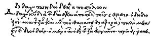

.jpg)
The Twelve Apostles (Pushkin Museum in Moscow)
The Didache (; Greek: Διδαχή, translit. Didakhé, lit. "Teaching"),[1] also
known as The Lord's Teaching Through the Twelve
Apostles to the Nations (Διδαχὴ Κυρίου διὰ τῶν
δώδεκα ἀποστόλων τοῖς ἔθνεσιν), is a brief anonymous early
Christian treatise written
in Koine
Greek, dated by modern scholars to the first or
(less commonly) second
century AD.[3] The
first line of this treatise is "The teaching of the Lord to the
Gentiles (or Nations) by the twelve apostles".[a] The
text, parts of which constitute the oldest extant written catechism,
has three main sections dealing with Christian
ethics, rituals such as baptism and Eucharist,
and Church organization. The opening chapters describe the virtuous
Way of Life and the wicked Way of Death. The Lord's Prayer is
included in full. Baptism is by immersion, or by affusion if
immersion is not practical. Fasting is ordered for Wednesdays and
Fridays. Two primitive Eucharistic prayers are given. Church
organization was at an early stage of development. Itinerant
apostles and prophets are important, serving as "chief priests" and
possibly celebrating the Eucharist. Meanwhile, local bishops and
deacons also have authority and seem to be taking the place of the
itinerant ministry.
The Didache is
considered the first example of the genre of Church
Orders. The Didache reveals
how Jewish Christians saw themselves and how they adapted their
practice for Gentile Christians. The Didache is
similar in several ways to the Gospel
of Matthew, perhaps because both texts originated in similar
communities.[5] The
opening chapters, which also appear in other early Christian texts,
are likely derived from an earlier Jewish source.
The Didache is
considered part of the group of second-generation Christian writings
known as the Apostolic
Fathers. The work was considered by some Church
Fathers to be a part of the New
Testament,[6] while
being rejected by others as spurious or non-canonical,[7][8][9] In
the end, it was not accepted into the New
Testament canon. However, works which draw directly or
indirectly from the Didache include
the Didascalia
Apostolorum, the Apostolic
Constitutions and the Ethiopic
Didascalia, the latter of which is included in the "broader
canon" of the Ethiopian
Orthodox Church.
Lost for centuries, a Greek manuscript
of the Didache was rediscovered in
1873 by Philotheos
Bryennios, Metropolitan of Nicomedia, in the Codex
Hierosolymitanus. A Latin version
of the first five chapters was discovered in 1900 by J. Schlecht.[10]
Date, composition and modern translations[edit]

The title of the
Didache in
the manuscript discovered in 1873
Many English and American scholars
once dated the text to the late 2nd century AD, a
view still held by some today,[11] but
other scholars now assign the Didache to the first century.[12][13] The
document is a composite work, and the discovery of the Dead
Sea Scrolls, with its Manual
of Discipline, has provided evidence of development over a
considerable period of time, beginning as a Jewish catechetical work
which was then developed into a church manual.
Two uncial fragments containing Greek
text of the Didache (verses
1:3c–4a; 2:7–3:2) were found among the Oxyrhynchus
Papyri (no. 1782) and are now in the collection of
the Sackler
Library in Oxford.[15][16][17] Apart
from these fragments, the Greek text of the Didache has
only survived in a single manuscript, the Codex Hierosolymitanus.
Dating the document is thus made difficult both by the lack of hard
evidence and its composite character. The Didache may
have been compiled in its present form as late as 150, although a
date closer to the end of the first century seems more probable to
many.[18]
The teaching is anonymous, a pastoral
manual which Aaron Milavec states "reveals more about how Jewish-Christians saw
themselves and how they adapted their Judaism for gentiles than
any other book in the Christian Scriptures". The Two
Ways section is likely based on an earlier Jewish
source. The
community that produced the Didache could have been based in Syria,
as it addressed the Gentiles but from a Judaic perspective, at some
remove from Jerusalem, and shows no evidence of Pauline influence. Alan
Garrow claims that its earliest layer may have originated in the
decree issued by the Apostolic council of AD 49–50, that is by the
Jerusalem assembly under James
the Just.[20]
The text was lost, but scholars knew
of it through the writing of later church fathers, some of whom had
drawn heavily on it.[21] In
1873 in Istanbul, metropolitan Philotheos Bryennios found a Greek
copy of the Didache, written in 1056, and he published it in 1883.[21] Hitchcock
and Brown produced the first English translation in March 1884. Adolf
von Harnack produced the first German translation
in 1884, and Paul
Sabatier produced the first French translation and
commentary in 1885.[22]
Early references[edit]
The Didache is
mentioned by Eusebius (c.
324) as the Teachings of the Apostles along
with other books he considered non-canonical:[23]
Let there be placed among the spurious
works the Acts
of Paul, the so-called Shepherd and
the Apocalypse
of Peter, and besides these the Epistle
of Barnabas, and what are called the Teachings
of the Apostles, and also the Apocalypse
of John, if this be thought proper; for as I wrote
before, some reject it, and others place it in the canon.
Athanasius (367) and Rufinus (c.
380) list the Didache among
apocrypha. (Rufinus gives the curious alternative title Judicium
Petri, "Judgment of Peter".) It is rejected by Nicephorus (c.
810), Pseudo-Anastasius,
and Pseudo-Athanasius in Synopsis and
the 60 Books canon. It is accepted by the Apostolic
Constitutions Canon 85, John
of Damascus and the Ethiopian
Orthodox Church. The Adversus Aleatores by
an imitator of Cyprian quotes
it by name. Unacknowledged citations are very common, if less
certain. The section Two Ways shares
the same language with the Epistle
of Barnabas, chapters 18–20, sometimes word for word,
sometimes added to, dislocated, or abridged, and Barnabas iv, 9
either derives from Didache, 16, 2–3, or vice
versa. There can also be seen many similarities to the Epistles of
both Polycarp and Ignatius
of Antioch. The Shepherd
of Hermas seems to reflect it, and Irenaeus, Clement
of Alexandria,[b] and Origen
of Alexandria also seem to use the work, and so in
the West do Optatus and
the "Gesta apud Zenophilum."[c] The Didascalia
Apostolorum are founded upon the Didache.
The Apostolic
Church-Ordinances has used a part, the Apostolic
Constitutions have embodied the Didascalia.
There are echoes in Justin
Martyr, Tatian, Theophilus
of Antioch, Cyprian,
and Lactantius.
Contents[edit]
The Didache is
a relatively short text with only some 2,300 words. The contents may
be divided into four parts, which most scholars agree were combined
from separate sources by a later redactor:
the first is the Two Ways, the Way of Life and
the Way of Death (chapters 1–6); the second part is a ritual dealing
with baptism, fasting,
and Communion (chapters
7–10); the third speaks of the ministry and how to treat apostles,
prophets, bishops, and deacons (chapters 11–15); and the final
section (chapter 16) is a prophecy of the Antichrist and the Second
Coming.
The manuscript is commonly referred to
as the Didache. This is short for the header
found on the document and the title used by the Church Fathers, "The
Lord's Teaching of the Twelve Apostles"[d] .A
fuller title or subtitle is also found next in the manuscript, "The
Teaching of the Lord to the Gentiles[e] by
the Twelve Apostles".[f]
Description[edit]
Willy Rordorf considered the first
five chapters as "essentially Jewish, but the Christian community
was able to use it" by adding the "evangelical section". "Lord"
in the Didache is reserved usually
for "Lord God", while Jesus is called "the servant" of the Father (9:2f.;
10:2f.). Baptism was
practiced "in the name of the Father and of the Son and of the Holy
Spirit."[29] Scholars
generally agree that 9:5, which speaks of baptism "in the name of
the Lord," represents an earlier tradition that was gradually
replaced by a trinity of
names." A
similarity with Acts 3
is noted by Aaron Milavec: both see Jesus as "the servant (pais)[31] of
God". The
community is presented as "awaiting the kingdom from
the Father as entirely a future
event".
The Two Ways[edit]
The first section (Chapters 1–6)
begins: "There are two ways, one of life and one
of death, and there is a great difference between these two
ways."[33]
Apostolic Fathers, 2nd ed., Lightfoot-Harmer-Holmes, 1992,
notes:
The Two Ways material
appears to have been intended, in light of 7.1, as a summary of
basic instruction about the Christian life to be taught to those
who were preparing for baptism and church membership. In its
present form it represents the Christianization of
a common Jewish form of moral instruction. Similar material is
found in a number of other Christian writings from the first
through about the fifth centuries, including the Epistle
of Barnabas, the Didascalia, the Apostolic
Church Ordinances, the Summary
of Doctrine, the Apostolic
Constitutions, the Life of
Schnudi, and On the Teaching of
the Apostles (or Doctrina), some of which are
dependent on the Didache. The
interrelationships between these various documents, however, are
quite complex and much remains to be worked out.
The closest parallels in the use of
the Two Ways doctrine are found among the Essene Jews
at the Dead
Sea Scrolls community. The Qumran community
included a Two Ways teaching in its founding Charter, The
Community Rule.
Throughout the Two Ways there are many Old
Testament quotes shared with the Gospels,
and many theological similarities, but Jesus is
never mentioned by name. The first chapter opens with the Shema ("you
shall love God"), the Great
Commandment ("your neighbor as yourself"), and the Golden
Rule in the negative form. Then come short extracts
in common with the Sermon
on the Mount, together with a curious passage on giving and
receiving, which is also cited with variations in Shepherd
of Hermas (Mand., ii, 4–6). The Latin omits
1:3–6 and 2:1, and these sections have no parallel in Epistle
of Barnabas; therefore, they may be a later addition, suggesting
Hermas and the present text of the Didache may
have used a common source, or one may have relied on the other.
Chapter 2 contains the commandments against murder, adultery, corrupting
boys, sexual
promiscuity, theft, magic, sorcery, abortion, infanticide,
coveting, perjury,
false testimony, speaking evil, holding grudges, being
double-minded, not acting as you speak, greed, avarice, hypocrisy,
maliciousness, arrogance,
plotting evil against neighbors, hate, narcissism and
expansions on these generally, with references to the words
of Jesus. Chapter 3 attempts to explain how one vice leads to
another: anger to murder, concupiscence to
adultery, and so forth. The whole chapter is excluded in Barnabas. A
number of precepts are added in chapter 4, which ends: "This is the
Way of Life." Verse 13 states you must not forsake the Lord's
commandments, neither adding nor subtracting (see also Deut
4:2,12:32).
The Way of Death (chapter 5) is a list of vices to be avoided.
Chapter 6 exhorts to the keeping in the Way of this Teaching:
See that no one causes you to err from
this way of the teaching, since apart from God it teaches you.
For if you are able to bear the entire yoke of the Lord, you
will be perfect; but if you are not able to do this, do what you
are able. And concerning food, bear what you are able; but
against that which is sacrificed to idols be exceedingly
careful; for it is the service of dead gods.
The Didache, like
1 Corinthians 10:21, does not give an absolute prohibition on eating
meat which has been offered to idols, but merely advises being
careful.[34] Comparable
to the Didache is the "let him eat
herbs" of Paul
of Tarsus as a hyperbolical expression
like 1
Cor 8:13: "I will never eat flesh, lest I should scandalize my
brother", thus giving no support to the notion of vegetarianism in
the Early
Church. John Chapman in the Catholic
Encyclopedia (1908) states that the Didache is
referring to Jewish
meats.[10] The
Latin version substitutes for chapter 6 a similar close, omitting
all reference to meats and to idolothyta, and
concluding with per Domini nostri Jesu Christi ...
in saecula saeculorum, amen, "by our lord Jesus Christ ... for
ever and ever, amen". This is the end of the translation. This
suggests the translator lived at a day when idolatry had
disappeared, and when the remainder of the Didache was
out of date. He had no such reason for omitting chapter 1, 3–6, so
that this was presumably not in his copy.[10]
Vice and virtue lists, and homosexuality[edit]
Vice lists, which are common
appearances in Paul's epistles, were relatively unusual within
ancient Judaism of the Old Testament times. Within the Gospels,
Jesus' structure of teaching the Beatitudes is
often dependent upon the Law and the Prophets. At times, however,
Jesus expressed such vice lists that precede Paul's, such as in Mark
7:20-23. Paul's vice and virtue lists could bear more influence from
the Hellenistic-Jewish influences of Philo (20 BC – AD 50) and other
writers of the intertestamental period.[35]
The way of death and the "grave sin"
which are forbidden, is reminiscent of the various "vice lists"
found in the Pauline Epistles, which warn against engaging in
certain behaviours if you want to enter the Kingdom of God.
Contrasting what Paul wrote in 1 Corinthians 6:9-10, Galatians
5:19-21 and 1 Timothy 1:9-11 with Didache 2 displays
a certain commonality with one another, almost with the same
warnings and words, except for one line: thou shalt
not corrupt boys. Whereas Paul uses the compound word arsenokoitai (ἀρσενοκοῖται),
a hapax
legomenon literally meaning male-bedder, based on
the Greek words for "male" and "lie with" found in the Septuagint
translation of Leviticus 18:22,[36] the
Didache uses a word translated as child corrupter (παιδοφθορήσεις)
which is likewise used in the Epistle
of Barnabas.
Rituals[edit]
Baptism[edit]
The second part (chapters 7 to 10)
begins with an instruction on baptism,
the sacramental rite that admits someone into the Christian Church. Baptism
is to be conferred "in the Name of the Father, and of the Son and of
the Holy Spirit"[29] with
triple immersion in “living water” (that is, flowing water, probably
in a stream). If
that is not practical, in cold or even warm water is acceptable. If
the water is insufficient for immersion, it may be poured three
times on the head (affusion). The baptized and the baptizer, and, if
possible, anyone else attending the ritual should fast for one or
two days beforehand.
The New Testament is rich in metaphors
for baptism but offers few details about the practice itself, not
even whether the candidates professed their faith in a formula. The Didache is
the oldest extra-biblical source for information about baptism, but
it, too lacks these details. The
"Two Ways" section of the Didache is
presumably the sort of ethical instruction that catechumens
(students) received in preparation for baptism.
Fasting[edit]
Chapter 8 suggests that fasts are not
to be on the second day and on the fifth day "with the hypocrites",
but on the fourth day and on the preparation day. Fasting Wednesday
and Friday plus worshiping on the Lord's day constituted the
Christian week. Nor
must Christians pray with their Judaic brethren; instead they shall
say the Lord's
Prayer three times a day. The text of the prayer is
not identical to the version in the Gospel
of Matthew, and it is given with the doxology "for
Yours is the power and the glory forever." This doxology derives
from 1 Chronicles 29:11–13; Bruce
M. Metzger held that the early church added it to
the Lord's Prayer, creating the current Matthew reading.[41]
Daily prayer[edit]
The Didache provides
one of the few clues historians have in reconstructing the daily
prayer practice among Christians before the 300s. It
instructs Christians to pray the "Our Father" three times[43] a
day but does not specify times to pray. Recalling
the version of Matthew
6,9–13, it affirms "you must not pray like the hypocrites, but
you should pray as follows."[44] Other
early sources speak of two-fold, three-fold, and five-fold daily
prayers.
Eucharist[edit]
The Didache includes
two primitive and unusual prayers for the Eucharist ("thanksgiving"), which
is the central act of Christian worship. It
is the earliest text to refer to this rite as the Eucharist.
Chapter 9 begins:
Now concerning the Eucharist,
give thanks this way. First, concerning the cup:
We thank thee, our Father, for the holy vine of David Thy
servant, which Thou madest known to us through Jesus Thy
Servant; to Thee be the glory for ever...
And concerning the broken bread:
We thank Thee, our Father, for
the life and knowledge which Thou madest known to us through
Jesus Thy Servant; to Thee be the glory for ever. Even as
this broken bread was scattered over the hills, and was
gathered together and became one, so let Thy Church be
gathered together from the ends of the earth into Thy
kingdom; for Thine is the glory and the power through Jesus
Christ for ever.
But let no one eat or drink of your Eucharist, unless they
have been baptized into the name of the Lord; for concerning
this also the Lord has said, "Give not that which is holy to
the dogs."
The Didache basically
describes the same ritual as the one that took place in Corinth.[46] As
with Paul's First Letter to the Corinthians, the Didache confirms
that the Lord's supper was literally a meal, probably taking place
in a "house church." The
order of cup and bread differs both from present-day Christian
practice and from that in the New Testament accounts of the Last
Supper,[48] of
which, again unlike almost all present-day Eucharistic celebrations,
the Didache makes no mention.

Revelation 22:17 (
KJV),
to which the prayer in
Didache 10
bears some similarity.
Chapter 10 gives a thanksgiving after
a meal. The contents of the meal are not indicated: chapter 9 does
not exclude other elements as well that the cup and bread, which are
the only ones it mentions, and chapter 10, whether it was originally
a separate document or continues immediately the account in chapter
9, mentions no particular elements, not even wine and bread. Instead
it speaks of the "spiritual food and drink and life eternal through
Thy Servant" that it distinguishes from the "food and drink (given)
to men for enjoyment that they might give thanks to (God)". After a
doxology, as before, come the apocalyptic exclamations: "Let grace
come, and let this world pass away. Hosanna to
the God (Son) of David! If any one is holy, let him come; if any one
is not so, let him repent. Maranatha.
Amen".[49] The
prayer is reminiscent of Revelation
22:17–20 and 1
Corinthians 16:22.[50]
John Dominic Crossan endorses John W. Riggs' 1984 The
Second Century article for the proposition that
'there are two quite separate eucharistic celebrations given in
Didache 9–10, with the earlier one now put in second place."[51] The
section beginning at 10.1 is a reworking of the Jewish birkat
ha-mazon, a three-strophe prayer at the conclusion of a meal,
which includes a blessing of God for sustaining the universe, a
blessing of God who gives the gifts of food, earth, and covenant,
and a prayer
for the restoration of Jerusalem; the content is
"Christianized", but the form remains Jewish.[52] It
is similar to the Syrian Church eucharist rite of the Holy
Qurbana of Addai and Mari, belonging to "a primordial era when
the euchology of the Church had not yet inserted the Institution
Narrative in the text of the Eucharistic Prayer."[53]
Church
organization[edit]
The church organization reflected in
the Didache seems to be underdeveloped. Itinerant
apostles and prophets are of great importance, serving as "chief
priests" and possibly celebrating the Eucharist. Development through
the ages indicates that titles changed without understanding of the
workings of the various roles by later editors in the belief that
the roles were interchangeable-- indicating that prophetic knowledge
was not operating actively during a season of "closed vision" (as in
the time of Samuel), modernised titles not indicating prophetic
knowledge. The
text offers guidelines on how to differentiate a genuine prophet
that deserves support from a false prophet who seeks to exploit the
community's generosity. For example, a prophet who fails to act as
he preaches is a false prophet (11:10). The local leadership
consists of bishops and deacons, and they seem to be taking the
place of the itinerant ministry. Christians
are enjoined to gather on Sunday[54] to
break bread, but to confess their sins first as well as reconcile
themselves with others if they have grievances (Chapter 14).
Matthew and
the Didache[edit]
Significant similarities between the Didache and
the Gospel of Matthew have been found[5] as
these writings share words, phrases, and motifs. There is also an
increasing reluctance of modern scholars to support the thesis that
the Didache used Matthew. This
close relationship between these two writings might suggest that
both documents were created in the same historical and geographical
setting. One argument that suggests a common environment is that the
community of both the Didache and
the gospel of Matthew was probably composed of Jewish
Christians from the beginning.[5] Also,
the Two Ways teaching (Did. 1–6) may have served as a pre-baptismal
instruction within the community of the Didache and
Matthew. Furthermore, the correspondence of the Trinitarian
baptismal formula in the Didache and
Matthew (Did. 7 and Matt 28:19) as well as the similar shape of the
Lord's Prayer (Did. 8 and Matt 6:5–13) appear to reflect the use of
similar oral traditions. Finally, both the community of the Didache (Did.
11–13) and Matthew (Matt 7:15–23; 10:5–15, 40–42; 24:11,24) were
visited by itinerant apostles and prophets, some of whom were
heterodox.[5]
See also

.jpg)

{kind=link}
{kind=link}
{kind=link}
{kind=link}